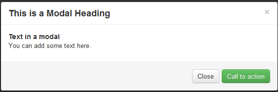

Bootstrap Modals（模态框）
描述
Bootstrap Modals（モーダル）は、カスタムJQueryプラグインを使用して作成されます。モーダルウィンドウを作成してユーザーエクスペリエンスを豊かにしたり、ユーザーに実用的な機能を追加したりするために使用できます。Modals（モーダル）内でPopover（ポップオーバー）やTooltip（ツールチッププラグイン）を使用できます。
このチュートリアルでは、いくつかの例と説明を通して、Bootstrapを使用してモーダルウィンドウを作成する方法について説明します。また、カスタマイズに利用できるさまざまなオプションについても説明します。
必要なものは何ですか
JQuery、Bootstrap CSS、および JavaScript ファイル bootstrap-modal.js が必要です。この js ファイルは、ダウンロードした Bootstrap のメインフォルダー内の js フォルダーにあります。
Jquery は、Bootstrap メインフォルダーの docs > assets > js の下にあり、名前は jquery.js です。または、https://ajax.googleapis.com/ajax/libs/jquery/1.7.1/jquery.min.js に直接アクセスして Jquery をダウンロードできます。
Bootstrap Modals（モーダル）はどのような見た目ですか
以下の例は、Bootstrap Modals（モーダル）がどのようなものかを示しています。

ご自身のウェブサイトでBootstrap Modals（モーダル）を使用する
以下の例は、WebページでBootstrap Modals（モーダル）を使用する方法を示しています。なお、JavaScriptコードを記述する必要はありません。例の後に関連する説明があります。
实例
<h2>使用Bootstrap创建模态框</h2>
<div id="example" class="modal hide fade in" style="display: none; ">
<div class="modal-header">
<a class="close" data-dismiss="modal">×</a>
<h3>これはモーダルボックスのタイトルです</h3>
</div>
<div class="modal-body">
<h4>モーダルボックス内のテキスト</h4>
<p>ここにテキストを追加できます。</p>
</div>
<div class="modal-footer">
<a href="../index.html" class="btn btn-success">唤醒活动</a>
<a href="../index.html" class="btn" data-dismiss="modal">关闭</a>
</div>
</div>
<p><a data-toggle="modal" href="../index.html" class="btn btn-primary btn-large">发动演示模态框</a></p>
</div>
<script src="https://ajax.googleapis.com/ajax/libs/jquery/1.7.1/jquery.min.js"></script>
<script src="../twitter-bootstrap/twitter-bootstrap-v2/js/bootstrap-modal.js.html"></script>
Bootstrap Modals（モーダル）のサンプルをオンラインで表示する
解释
以下の表は、上記のコードを説明しています。Bootstrap Modals（モーダル）の使用方法を理解するのに役立ちます。
| 代码 | 解释 |
|---|---|
| div id="example" | 関連するdivに割り当てられたid。idの値は、後でmodal（モーダル）を実装するJavaScriptを指します。 |
| class="modal hide fade in" | Bootstrap CSS の4つのクラス - modal、hide、fade、in は、modal（モーダル）のレイアウトを設定するために使用されます。 |
| style="display: none; | トリガーが発動するまで（関連するボタンのクリックなど）モーダルウィンドウを表示し続けるために使用されます。 |
| <div class="modal-header"> | modal-headerは、モーダルウィンドウのタイトルスタイルを定義するためのclassです。 |
| a class="close" | CSSクラスcloseは、モーダルウィンドウの閉じるボタンのスタイルを設定するために使用されます。 |
| data-dismiss="modal" | data-dismissは、カスタムHTML5データ属性です。モーダルウィンドウを閉じるために使用されます。 |
| class="modal-body" | modal-body は Bootstrap の CSS クラスであり、モーダルウィンドウの本体のスタイルを設定するために使用されます。 |
| class="modal-footer" | modal-footer は Bootstrap の CSS クラスであり、モーダルウィンドウの末尾のスタイルを設定するために使用されます。 |
| class="btn btn-success" | CSSクラスbtnとbtn-successは、モーダルウィンドウの末尾に大きなボタンを作成するために使用されます。他の任意のBootstrapボタンに置き換えることができます。 |
| class="btn" | Bootstrap CSSのボタンクラスbtnは、モーダルウィンドウの末尾に小さなボタンを作成するために使用されます。 |
| data-dismiss="modal" | HTML5 で定義された data 属性 data-dismiss は、モーダルウィンドウを閉じるために使用されます。 |
| data-toggle="modal" | HTML5 で定義された data 属性 data-toggle は、モーダルウィンドウを開くために使用されます。 |
| class="btn btn-primary btn-large" | ボタンのスタイルを設定し、そのボタンをクリックするとモーダルウィンドウが作成されます。 |
| <script src="https://ajax.googleapis.com/ajax/libs /jquery/1.7.1/jquery.min.js"></script> |
JQuery ファイルを参照します。 |
| <script src="../bootstrap/twitter-bootstrap-v2> /js/bootstrap-modal.js.html"></script> |
bootstrap modal（モーダル）の JS ファイルを参照します。 |
使用 JavaScript
JavaScriptを使用してBootstrapモーダルウィンドウを実装できます。JavaScript内でmodal()を呼び出すだけです。コードは次のようになります。body終了タグ（つまり</body>）の前に参照してください。
$(function ()
{ $("#identifier").modal();
});
ここでidentifierは、関連するコンテナ要素を識別するためのJQueryセレクターです。次に、オプションにはどのようなものがあるかを見ていきます。
选项
以下は、modal()を使用してモーダルウィンドウの外観と感触をカスタマイズする際に使用できるオプションです。
backdrop
backdrop オプションは、modal-backdrop 要素を含めるために使用されます。
「JavaScriptを使用」の例の2行目のコードを以下のコードに置き換えると、backdropオプションにfalseを割り当てることになり、この場合、modal-backdropは一切存在しません。
{ $("#example").modal({backdrop:false});
keyboard
keyboardオプションを使用すると、escapeをクリックしたときにモーダルウィンドウが閉じます。タイプはbooleanで、デフォルト値はtrueです。keyboardオプションの値をfalseに設定すると、escapeをクリックしてもモーダルウィンドウは閉じません。
「JavaScriptを使用」の例の2行目のコードを以下のコードに置き換えると、keyboardオプションにfalseを割り当てることになり、この場合、escapeキーをクリックしてもモーダルウィンドウは閉じません。
{ $("#example").modal({keyboard:false});
show
showオプションを使用すると、初期化時にモーダルウィンドウが表示されます。タイプはbooleanで、デフォルト値はtrueです。showオプションの値をfalseに設定すると、初期化時にモーダルウィンドウは表示されません。
「JavaScriptを使用」の例の2行目のコードを以下のコードに置き換えると、showオプションにfalseを割り当てることになり、初期化時にモーダルウィンドウは表示されません。
{ $("#example").modal({show:false});
方法
以下は、modal()を使用する際のメソッドです。
.modal(options)
このメソッドは、コンテンツを modal（モーダル）としてアクティブにします。オプションの object 型の options パラメータを参照できます。もしこのチュートリアルの第一个实例の</body>タグの前に次のコードを追加すると、modal（モーダル）のbackdrop要素は一切存在しなくなります。
$('#example').modal({
backdrop: false
})
.modal('toggle')
このメソッドは、modal（モーダル）を手動で切り替えます。このチュートリアルの第一个实例中の</body>タグの前に以下のコードを追加すると、modal（モーダル）を手動で切り替えることができます。
$('#example').modal('toggle')
.modal(show)
このメソッドは、modal（モーダル）を手動で開くために使用できます。このチュートリアルの第一个实例の</body>タグの前に次のコードを追加すると、modal（モーダル）を手動で開くことができます。
$('#example').modal('show')
.modal(hide)
このメソッドは、modal（モーダル）を手動で非表示にするために使用できます。このチュートリアルの第一个实例の</body>タグの前に次のコードを追加すると、modal（モーダル）を手動で非表示にできます。
$('#example').modal('hide')
事件
以下は、Modals（モーダル）に関連するイベントです。これらのイベントは、独自のコードをインターセプトして実行するために使用されます。
show
showインスタンスメソッドが呼び出された後、このイベントが直ちにトリガーされます。
shown
モーダルが表示された後（CSSトランジション効果も完了した時点で）、このイベントがトリガーされます。
hide
hideインスタンスメソッドが呼び出された直後に、このイベントがトリガーされます。
hidden
モーダルがユーザーに非表示にされた後（CSSトランジション効果も完了した時点で）、このイベントがトリガーされます。
ここをクリックして、本チュートリアルで使用するすべてのHTML、CSS、JSおよび画像ファイルをダウンロードしてください。
其他扩展
クリックしてノートを共有
ノートは本記事の内容の拡張である必要があります！
記事投稿は、ここをクリックしてください
注册邀请码获取方式
分享笔记前必须登录！
注册邀请码获取方式